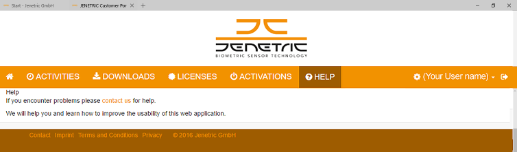

|
TOUCHLAB SDK
1.13.0
|
|
TOUCHLAB SDK
1.13.0
|
There are parts of the API which require a license. A license is a timelimited or permanent right to unlock features of the fingerprint scanner device and upgrading the scanner functionality. The licenses are provided on the JENETRIC Support Center website. To obtain a license contact JENETRIC Sales to request a customer account. Authentication is generally required in logging in to the JENETRIC Support Center by using a user name and a password. The Sales department will send you an E-Mail which contains a temporary validation link to register your authentication data. An Internet connection is required to register your data. For more information on how to use the JENETRIC Support Center refer to the JENETRIC Support Center Help file.

There are two different kinds of licenses. Local licenses are stored on the host computer. They are used to enable a feature of the fingerprint scanner device or a software product related to the scanner device. Scanner Licenses are license files containing a serial number of a fingerprint scanner device. They can be programmed into the scanner device using the function TL_License_AddScannerLicense() from the LicenseApi. Those kinds of scanner licenses cannot be saved locally using the LicenseApi function TL_License_AddLocalLicense().
The following table shows the functions which require a license and are used with the fingerprint scanner device.
| License | Feature | LTQ | LTQC | old Name up to SDK version 1.8. |
|---|---|---|---|---|
| TOUCHLAB roll | Enables capturing rolled fingerprints | x | x | LIVETOUCH roll |
| TOUCHLAB signature | Enables to capture electonic signatures | x | - | LIVETOUCH signature |
| TOUCHLAB secure | Detection of PAD (Presentation Attack Detection) | x | x | - |
LTQ: LIVETOUCH QUATTRO
LTQC: LIVETOUCH QUATTRO Compact
You can order your JENETRIC device with a license installed by the manufacturer. However you can install a license manually at a later stage. NOTE: You cannot delete a license installed by the manufacturer. Only a manually installed license can be deleted.
The CHECKBOX tool and help file will be automatically installed with the TOUCHLAB SDK. It is a simple application to demonstrate the use of all scanner functionalities without knowing the details of the APIs associated with the fingerprint scanner device. The tool supports also unlocking of features and upgrading the scanner functionality. During installation of the TOUCHLAB SDK a shortcut of the CHECKBOX tool will be placed on your desktop. To install or delete a license refer to the CHECKBOX Help on chapter 3 "The Scanner information page". In case the installation of a license fails, an according generic error message describing the nature of the problem is displayed. Verify the correct installation of your Livescanner, the correct Serial Number, and repeat the license installation procedure. If the primary steps failed contact JENETRIC Technical Support.
 1.8.11
1.8.11